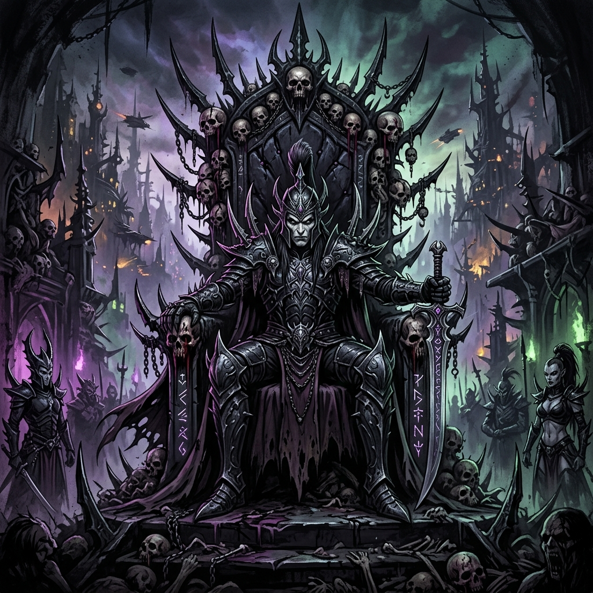
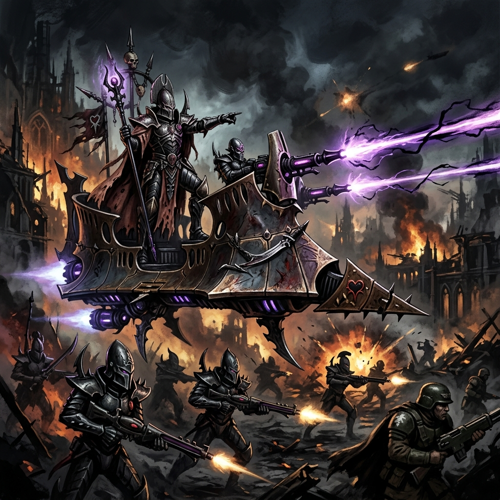

ASDRUBAEL VECT
Lorde Supremo de Commorragh • Arconte da Kabala do Coração Negro • A Mente Sombria

Origem
Entre a traiçoeira sociedade dos Drukhari, onde o assassinato é política e a traição é lei, governar Commorragh — a Cidade das Trevas — exige um nível insondável de intelecto, crueldade e paranoia. E ninguém governa Commorragh além de Asdrubael Vect.
Vect afirma, arrogante e impunemente, que presenciou a própria Queda do antigo Império Aeldari e sobreviveu a ela, o que o tornaria um dos seres vivos mais antigos da galáxia (superando os 10 mil anos). Começando como um mero escravo, Vect ascendeu pelos degraus da carnificina até fundar a Kabala do Coração Negro (Kabal of the Black Heart) e usurpar o controle das famílias nobres que originalmente fundaram a cidade.
Com um controle tirânico absoluto sobre Commorragh, ele manipula as outras Kabalas, os Cultos das Wyches e os Haemonculi como se fossem peças descartáveis de um jogo de xadrez cósmico. Nenhuma revolta, assassinato ou golpe de estado conseguiu remover Vect do poder; na verdade, a maioria deles foi orquestrada pelo próprio Vect para expurgar seus rivais antes que eles representassem qualquer ameaça real.

Credo de Guerra
"Fui um escravo, um guerreiro, e agora o Lorde Supremo de Commorragh. Vocês não me temem por causa da dor que posso causar, me temem porque sou a prova viva de que a escuridão sempre vence."
Asdrubael Vect raramente se envolve em batalhas corporais, não por falta de habilidade, mas porque considerar-se no mesmo patamar de um inimigo para sujar as mãos é, na sua visão, um insulto à sua divindade tática.
O Credo de Guerra de Vect é a manipulação perfeita. Ele conquista mundos e quebra frotas inteiras sem nem sair de Commorragh, enviando a sua formidável frota e hordas de guerreiros de elite Incubi para esmagar os inimigos de forma humilhante. Os escravos capturados por sua Kabala garantem que sua alma continue jovem e forte, desviando o olhar sedento da deusa Slaanesh.
Vect opera sempre dez passos à frente. Se um adversário parece estar ganhando, é porque Vect armou uma armadilha ainda mais profunda, esperando para aniquilar as esperanças deles no último instante imaginável.
Capacidade Bélica
- Dais of Destruction (O Púlpito da Destruição): O veículo pessoal de Vect, uma Nave-Raider imensa e luxuosa armada com múltiplas Dark Lances, pilotada e guarnecida pelas exóticas e mortais guerreiras da elite.
- O Cetro da Cidade Sombria: Um bastão símbolo de seu comando absoluto, capaz de disparar rajadas letais de matéria sombria e canalizar agonias telepáticas direto para o cérebro dos inimigos.
- Intelecto Transcendental: A verdadeira arma de Vect não é uma lâmina, mas sim seu cérebro; ele prevê invasões e golpes com séculos de antecedência e manipula raças inteiras para se destruírem mutuamente.
- O Castigo Final (Disfarce de Morte): Durante uma tentativa de assassinato épica, Vect forjou a própria morte apenas para retornar como uma "Musa Sombria", elevando-se acima dos deuses aos olhos dos Drukhari.
Localização Atual: Governando a Alta Commorragh de seu pináculo impossível no centro da teia.
Status: Ativo - Movendo as cordas da galáxia e garantindo que o Império Drukhari continue se banqueteando no caos absoluto gerado pela Cicatrix Maledictum.
